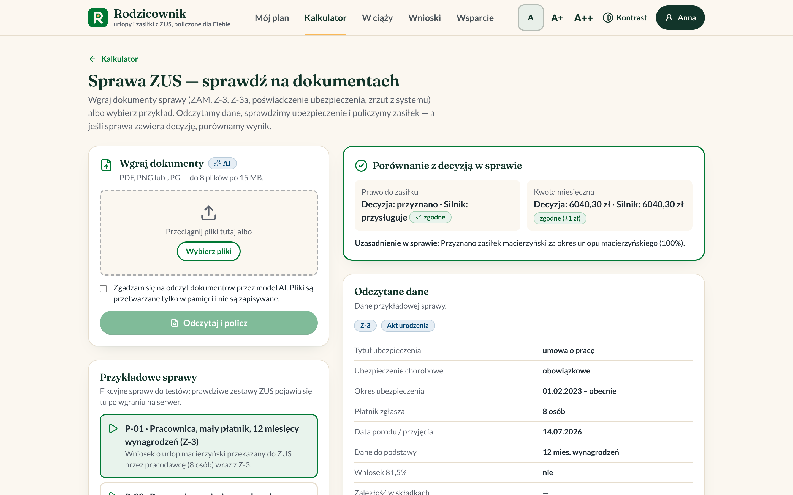
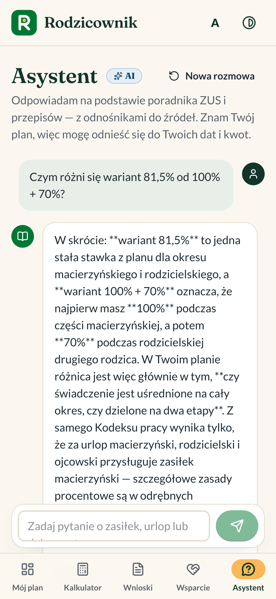
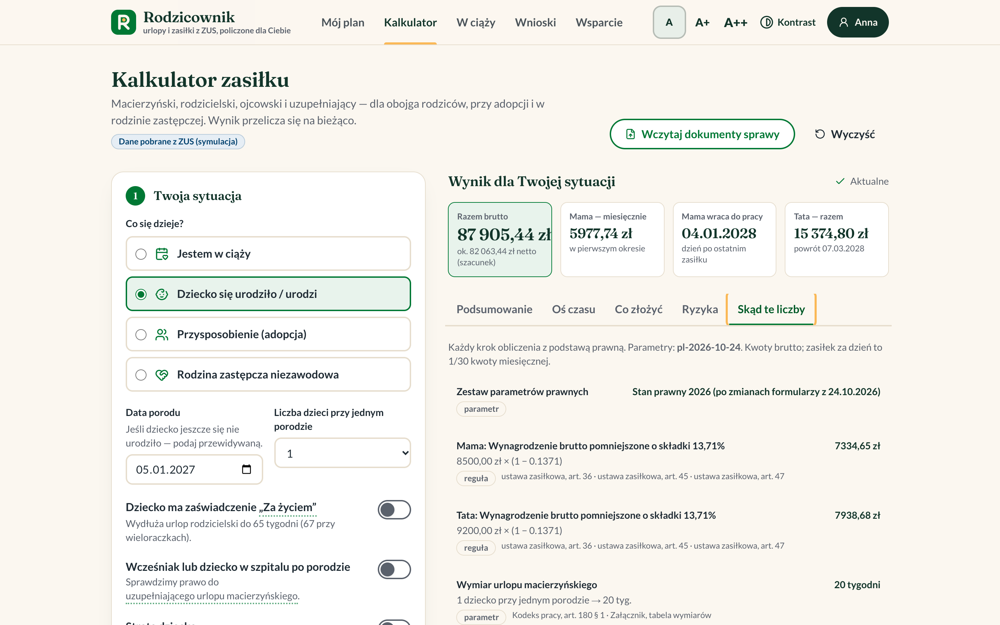

Wskazanie funkcji z AI
AI czyta i tłumaczy.
Liczy silnik reguł.
AIOdczyt dokumentówGPT-5.5

AIAsystent ze źródłamiGPT-5.4 mini

AIProsty językGPT-5.4 mini

BEZ AISkąd te liczbykwoty i prawo do zasiłku: silnik reguł

OpenAI w demo · Claude obsługiwany · tryb awaryjny bez klucza
Rozwiązania zewnętrzne: OpenAI API, Anthropic API, ElevenLabs (lektor filmu), Next.js, React, Tailwind, Radix, TanStack Query, fonty Lato i Fraunces
Rozwiązania zewnętrzne: OpenAI API, Anthropic API, ElevenLabs (lektor filmu), Next.js, React, Tailwind, Radix, TanStack Query, fonty Lato i Fraunces